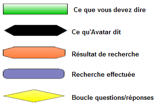
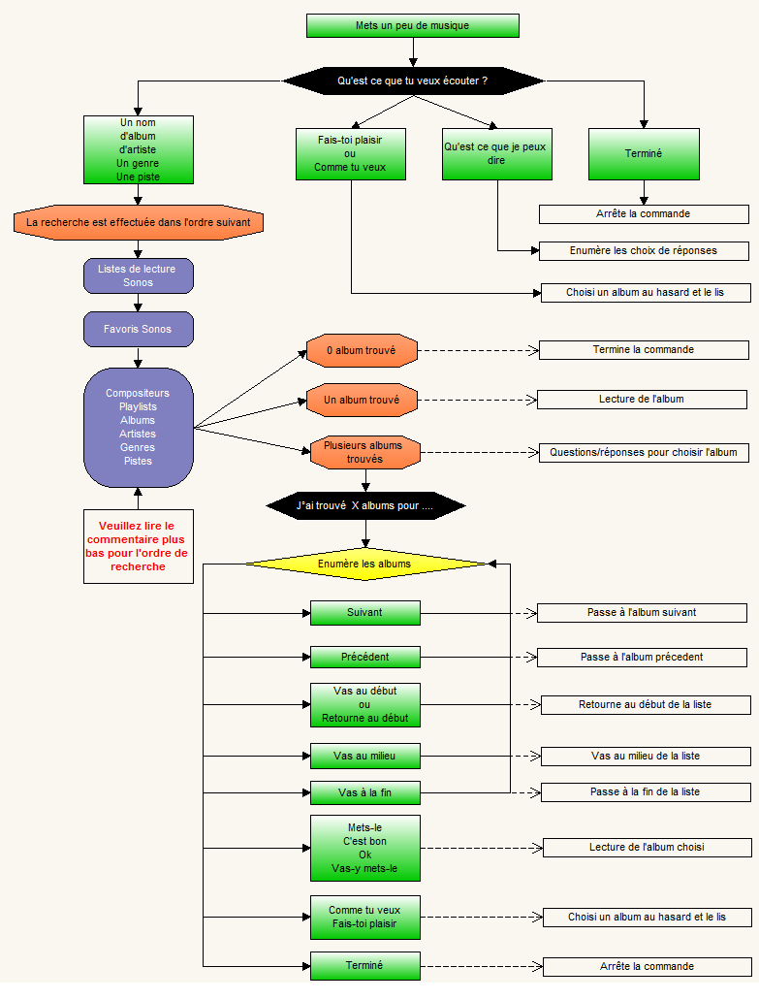
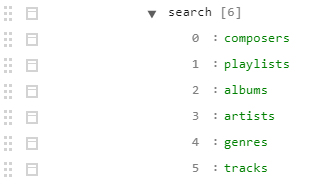
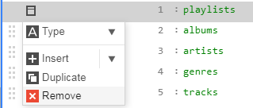
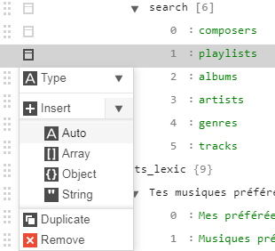

Rechercher de la musique
Cette commande donne accès à la bibliothèque musicale Sonos uniquement (hors Spotify).
Commande à prononcer: Mets un peu de musique (dans la <nom d'une pièce>)
Exemple dans la pièce courante:
- Mets un peu de musique
Exemple en précisant la pièce:
- Mets un peu de musique dans la Chambre
- Mets un peu de musique dans le Salon
Suivez le schéma suivant pour savoir comment la commande fonctionne.
Mémorisez ce que vous devez dire et les réponses d'Avatar.
Vous pouvez voir qu'il y a très peu de choses à retenir sur ce qu'il faut dire mais la façon dont la commande fonctionne permet de mieux l'appréhender, donc prenez le temps... :-)
Symboles du schéma:


L'ordre de recherche
L'ordre des recherche commence par les listes de lectures et les favoris. Ces 2 bibliothèques musicales ne peuvent pas être supprimées ou modifiées.
Ensuite, les recherches suivantes sont effectuées dans l'ordre défini sur un groupe de possibilités configurées dans les propriétés du plug-in. L'ordre d'exécution des types de recherches peut être changé, les types de recherches peuvent être supprimés ou ajoutés... à votre convenance.
Ci-dessous le tableau des recherches possibles:
Type de recherche |
Nom à ajouter dans la propriété |
Ordre de recherche par défaut |
Commentaire |
Compositeurs |
composers |
1 |
Pour effectuer la recherche dans les compositeurs |
Listes de lecture |
playlists |
2 |
Pour effectuer la recherche dans les listes de lecture |
Albums |
albums |
3 |
Pour effectuer la recherche dans les albums |
Artistes |
artists |
4 |
Pour effectuer la recherche dans les artistes |
Genres |
genres |
5 |
Pour effectuer la recherche dans les genres |
Pistes |
tracks |
6 |
Pour effectuer la recherche dans les pistes des albums |
- Dans l'interface d'A.V.A.T.A.R serveur
- Sur le Node serveur, cliquez sur "Menu Plugins-> Plugin Studio"
- Cliquez ensuite sur le plug-in "Sonos" puis sur l'onglet "Propriétés"
- Gérez la propriété "musicTypes -> search"

Pour supprimer un type de recherche
- Cliquez sur le petit symbole à gauche du type

- Cliquez sur "Remove"
Pour ajouter un type de recherche
- Cliquez sur le petit symbole à gauche du type en dessous du type que vous voulez ajouter

- Cliquez sur "Insert -> Auto"
- Ajouter le type
- Sauvegardez les propriétés (clique droit)
Créé avec HelpNDoc Personal Edition: Créer des livres électroniques facilement